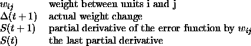

One method to speed up the learning is to use information about the curvature of the error surface. This requires the computation of the second order derivatives of the error function. Quickprop assumes the error surface to be locally quadratic and attempts to jump in one step from the current position directly into the minimum of the parabola.
Quickprop [Fah88] computes the derivatives in the direction of each weight. After computing the first gradient with regular backpropagation, a direct step to the error minimum is attempted by
where:
